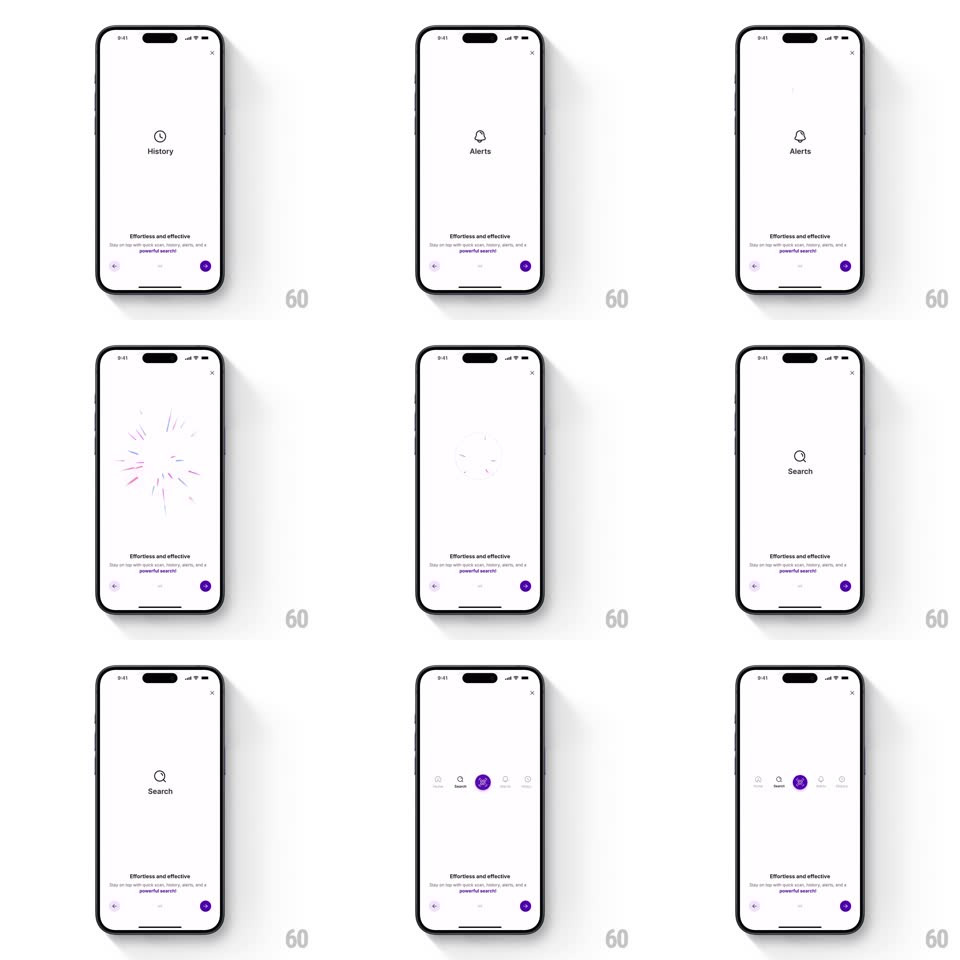

Media
Frame-by-frame

Rebuild this animation 1:1: PhonePe's new-tabs intro - a full-screen overlay cycles each tab icon large at center with a sparkle burst, then the icons slide down into a newly revealed bottom navigation bar.

Rebuild this animation 1:1: PhonePe's new-tabs intro - a full-screen overlay cycles each tab icon large at center with a sparkle burst, then the icons slide down into a newly revealed bottom navigation bar. ## Integration Integration: stack-agnostic spec - springs given as stiffness/damping, timed motions as duration + curve; map every value to your framework and animation library of choice. ## Scene White full-screen overlay (X to close): a large tab icon with its label at center (History clock, Alerts bell, Search magnifier), the copy "Effortless and effective" with a purple arrow at the bottom; the finale reveals the real bottom nav bar with the icons docked and Search highlighted purple. ## Motion spec Pattern: cycling icon showcase into nav reveal, ~4s. - Cycle: each icon+label crossfades in at center (250ms) and holds 800ms; between icons a sparkle burst fires (8-10 thin purple/blue rays shoot outward 30px and fade, 350ms). - Advance: tapping the purple arrow or the auto-timer steps to the next icon. - Reveal: the last icon slides down into the bottom bar's center slot (spring ~320/24, 400ms) as the bar itself rises into view (spring ~300/26, 350ms) and the other tab icons fade into their slots (200ms, 60ms stagger). - The Search tab lands highlighted (purple fill circle, 150ms pop). ## Calibration - The sparkle burst is the transition between icons - it fires at the swap, not during the hold. - In the finale the center icon travels; it does not fade and reappear. ## Reduced motion Icons crossfade; the bar slides in without the traveling icon. ## Don't miss - The cycled icons are the actual tab icons - what you see is what docks. - The bottom bar appears only in the finale, fully formed.